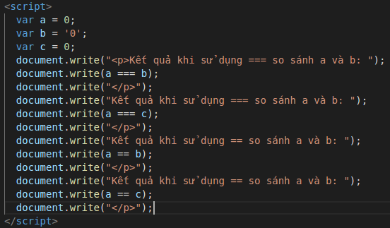
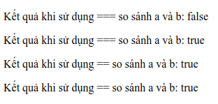

Underfined có nghĩa là không xác định. Khi ta khai báo một biến nhưng chưa gán giá trị cho nó, khi đó biến sẽ có giá trị Underfined
Null có nghĩa là giá trị rỗng hoặc không tồn tại giá trị, nó có thể được gán cho biến như là một đại diện không giá trị
Khi ta sử dụng "use strict" ở đầu code, khi đó sẽ kích hoạt chế độ "strict mode". "Strict mode" sẽ cho bạn nhiều lỗi hơn và vô hiệu hóa một số tính năng làm cho code của bạn dễ đọc và chính xác hơn
Ưu thế khi sử dụng "user strict":
Nhược điểm khi sử dụng "user strict": Khi sử dụng với thư viện, có một số hành động sẽ không như mong muốn của dev. Và một số nhà phát triển không thích sự ràng buộc mà thích tìm hiểu các tính năng của ngôn ngữ
=== được sử dụng khi so sánh hai biến cùng kiểu dữ liệu và cùng giá trị. Trong khi đó == khi sử dụng sẽ đưa một hoặc hai biến về cùng kiểu dữ liệu rồi sau đó mới so sánh. Từ đó ta có thể nhận ra rằng nên sử dụng === để so sánh
Ví dụ:
Kết quả:
Const được sử dụng khi khai báo hằng số. Var và Let thì được khai báo cho biến toàn cục nhưng var thì sử dụng cho ES5, từ ES6 trở đi sẽ sử dụng Let để khai báo